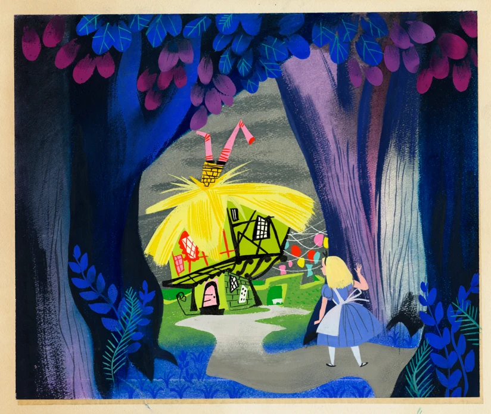
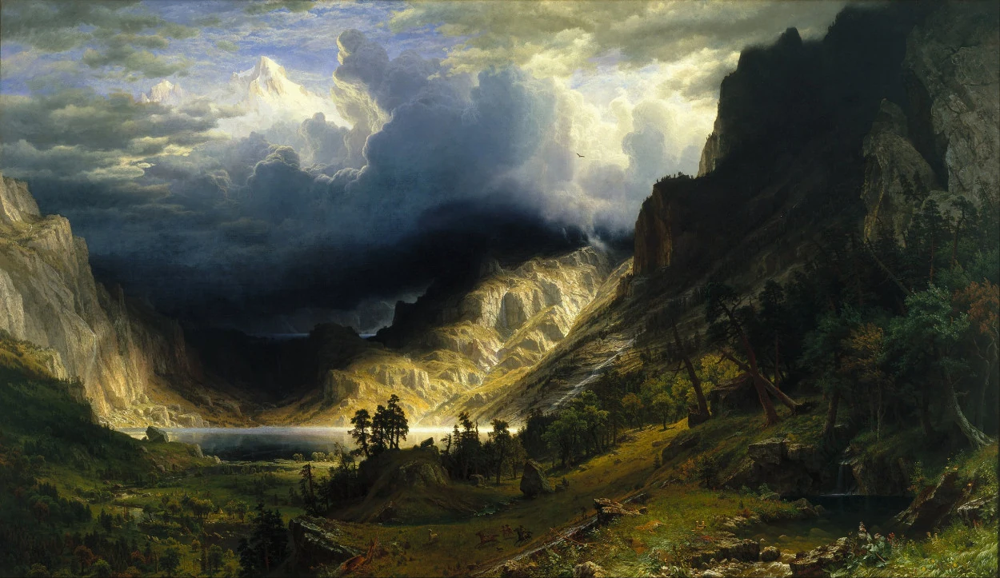

风格指南 · 艺术与设计运动
新艺术
Alphonse Mucha
流动的轮廓把人物、衣褶与装饰组织在一起。先看线的节奏，再看画面怎样成为一个整体。
精选风格
Alphonse Mucha
流动的轮廓把人物、衣褶与装饰组织在一起。先看线的节奏，再看画面怎样成为一个整体。

Tamara de Lempicka
把身体与衣料看作精确而有力的体块。几何化的转折、利落边缘和光泽让人物显得摩登。

Mary Blair
大胆色彩与简洁形状共同讲故事。人物可以很小，画面依然通过形状、比例和冷暖让情绪一目了然。

Malika Favre
只留下不可替代的形状。轮廓、负空间和少量颜色同时承担人物识别、光影与视觉趣味。
从作品到应用

作者未核实
以钴蓝天空与清新绿色打开画面。细金线贯穿叶脉、枝条和云纹，让自然景观具有精密的装饰秩序。

Albert Bierstadt
比尔施塔特把山谷、湖岸和草原组织成宏阔而富于情绪的空间。深色树群与岩壁围住远处的亮天、薄雾和水面；暖金受光区在蓝灰风暴云、暗绿树林与褐紫阴影间展开。近景的细节与远景的柔和过渡共同制造可走入的深度。本条以六幅已对应作品的用户复现图归纳风格，另两张同批附图暂存于待核实区。

作者未核实
这组竖幅人物插画以黑色轮廓、有限的哑光设色、卷浪、竖排题签和米黄旧纸效果建立浮世绘感，再把手掌、巨剑、头发和衣带推向观者，形成现代武侠动作海报的冲击力。系列统一性很强，乔峰的掌与龙、周伯通的双手与竹、黄药师的笛与海浪、杨过的剑与雕，又用不同物件提示人物身份。最值得学习的是“大动作—大色面—流动细线”的组织；主要不足是满幅裂纹与碎斑削弱疏密，部分黑发、衣袍、羽翼和山石相互粘连。四张中，黄药师的动静对照与色彩分区最突出，周伯通的表情与明暗分离较鲜明。